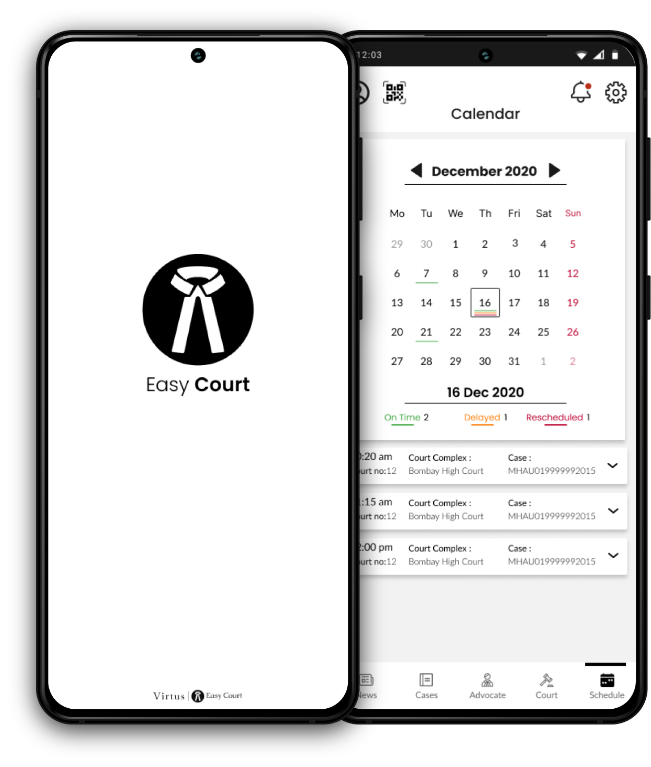

Easy Court
A virtual judicial platform for courtroom proceedings.

A virtual judicial platform for courtroom proceedings.
Design a virtual judicial platform for courtroom proceedings, to reduce the pendency of cases and help with faster disposal of the cases.
According to reports that cited data from the National Judicial Data Grid and the Supreme Court, at present there are 3.9
crore cases pending in the district and subordinate courts, 58.5 lakh cases in the various high courts, and more than 69,000
cases in the Supreme Court.
Pandemic has put forth yet another challenge by stalling the court procedures to bare minimum.
To design an virtual/digital courtroom platforms for the judiciary system to reduce the number of pending cases as well as to speed up the the process for the future cases, while facilitating ethics and authenticity needed considering the sensitivity of the judicial system.
RESEARCH
(Surveys, Personal Interviews, Desk Research )
RESEARCH SYNTHESIS
(User Persona, Empathy Mapping, affinity map, HMW’s, )
UX STRATEGY
( Impact effort Matrix and usability testing)
INTERACTION DESIGN
(Wireframes, Protypes, Micro-interaction)
During the dicovery phase I floated primarily 2 surveys one for lawyers and other for gneral population to get in touch with practicing lawyers and people who have been through a judicial proceeding to better understand the nature of the case and their experience.
Approached and interviewed five lawyers with varying demographics related to the the nature of practice in regards to the branches of judiciary system and its hierarchy and years of experience.

The secondary research mainly included refering to varios reports by 'Law commision of India' and understanding of various points mentioned below:

Once done with the research phase i started synthesising the data extracted from primary interviews and desk research begining with the empathy map.


Later on, 4 Personas were developed from the data that was refined for users through primary interviews and other inputs from secondary research for each i.e 2 lawyer's based on the type of practise and other demographics demographic. And 2 for involved parties i.e Defendant and Respondent.
Various highlighted findings from interviews regarding users interaction with the judicial processes and exxperiences as well as insignts were plotted down on the affinity map. Going through the research data on the affinity map I started clustering various relatable stickies under a broad category

After mapping the users epathy and understanding their goals motivations and painpoints. I moved on to defining the HMW's for a possible solutions.
Once the HMW's were defined I moved on to impact xeffort matrix to identify ideas that could provide maximum value and prioritising them basedon 'Impactx Efoort matrix'.
Once the HMW's defined and priorotised.I moved on to to ideation and after high-level brainstorming exercise and rounding up stickies as user stores based on consideration for an users role which extending from duty of an judicial member or rights involved parties and constrais of various legal constrains

Having a fair idea of what kind of features could be needed as prime priority based on user requirements defined by their task and functionality of a judicail proceeding.
Once again based on user tasks and subtasks a sitemap was drafted compartmentalising various sections based on taks referance and relativity.

Further on user flows were developed for users to Register, Sign in, view updates and notification as well as attend a judicial hearing as a lawyer, involved parties, judicial or other involved authourities and general public viewers as well.

With the userflows in place in sync with the sitemap and ideation sketches being guerilla tested on a paper prototype using marvel. I started designing Lo-Fi wireframes.


it was now time to set some visual vision for the application and for the same designed a style guide.


Once the visual fuidelines were in place I started to design the Hi-Fi screens and protyped them further for teting.Although previously refered UI Elements from styleguide were iterated for better visual hierarchy and various other design principles as well as from usability feedback.

Other than the intial guerilla usability test with sketches and a Lo-Fi testing two more Hi-Fi prototypes usability tests were conducted with 5 participants for each test and further the findings were compiled in a report for the first testing. Further iterations were made based on the findings of the first usability test and a comparative report was drafted for the same.
• Participants were recruited from my pool of social contacts.
• Each session lasts for 60 - 120 min.
• Each participant was assigned 7 tasks which were completed on the prototype of a designed solution for the mobile interface.
• Participants were given the task/scenarios and were asked to find the relevant information on the mobile application.
• Time taken for each task was recorded.
• Questions may be asked during the task, which at times may have affected the overall timing they took to complete the task .
• After each task, participants were asked to rate the difficulty in completion of task 1 = Easy, 2 = Moderate, 3 = Difficult.
• Additional questions were asked at the end of the session to understand the difficulty they faced which influenced their rating for completion of the task.
Few of the iterations are mentioned below :
For lawyers registration, ask to upload a bar license or a license no. instead of a bar registration certificate.
Informing of ability to click photos of documents can only be informed once instead of multiple mentions, for efficient UI.


For general population users registration, ask to upload a bar license or a license no. instead of a bar registration certificate.
Informing of ability to click photos of documents can only be informed once instead of multiple mentions, for efficient UI.


A better UX and UI could be designed to differentiate between Notifications and Chat messages as it is impossible to differentiate between them at a glance.


Increase vertical spacing between search bar and tab menu in the courts tab as it is hardly differentiable and hence affects its visibility


Optimize the personal cases info on the cases card considering the content data with an UI opportunity.


Other than the lawyers it was difficult for people to understand other and causelist tab menus in the courts tab adding a tooltip could be helpful.


Replace the case CNR no. with the client name for lawyers as CNR no. doesn’t help to recognise a case.


The rescheduled red colour and the sundays red colour may make it look like all the cases on sunday are rescheduled.
Use a colored dot instead of a line to mark changes in time of cases in the calendar to make it look aesthetically uncluttered.


Thank You